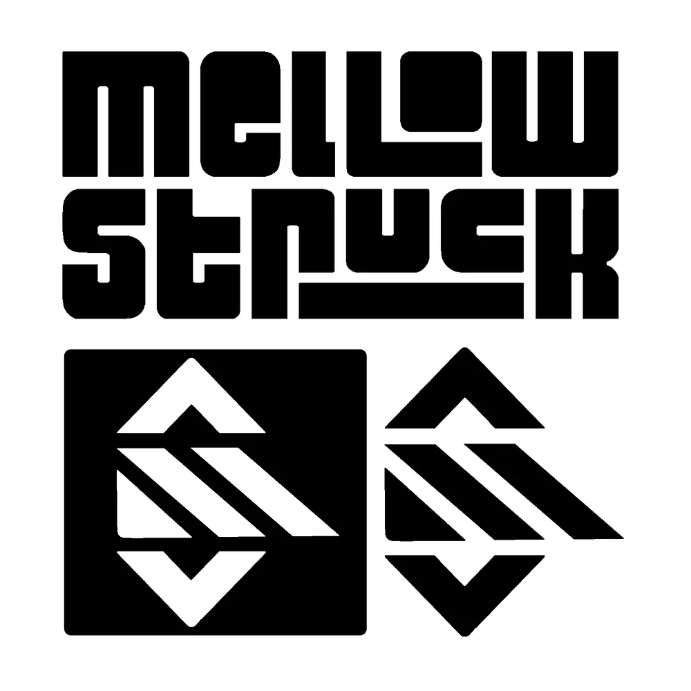
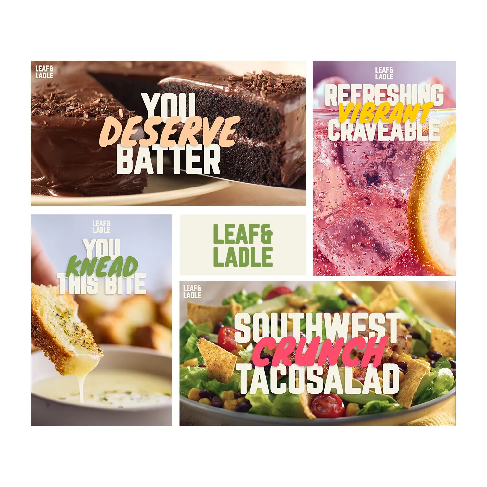
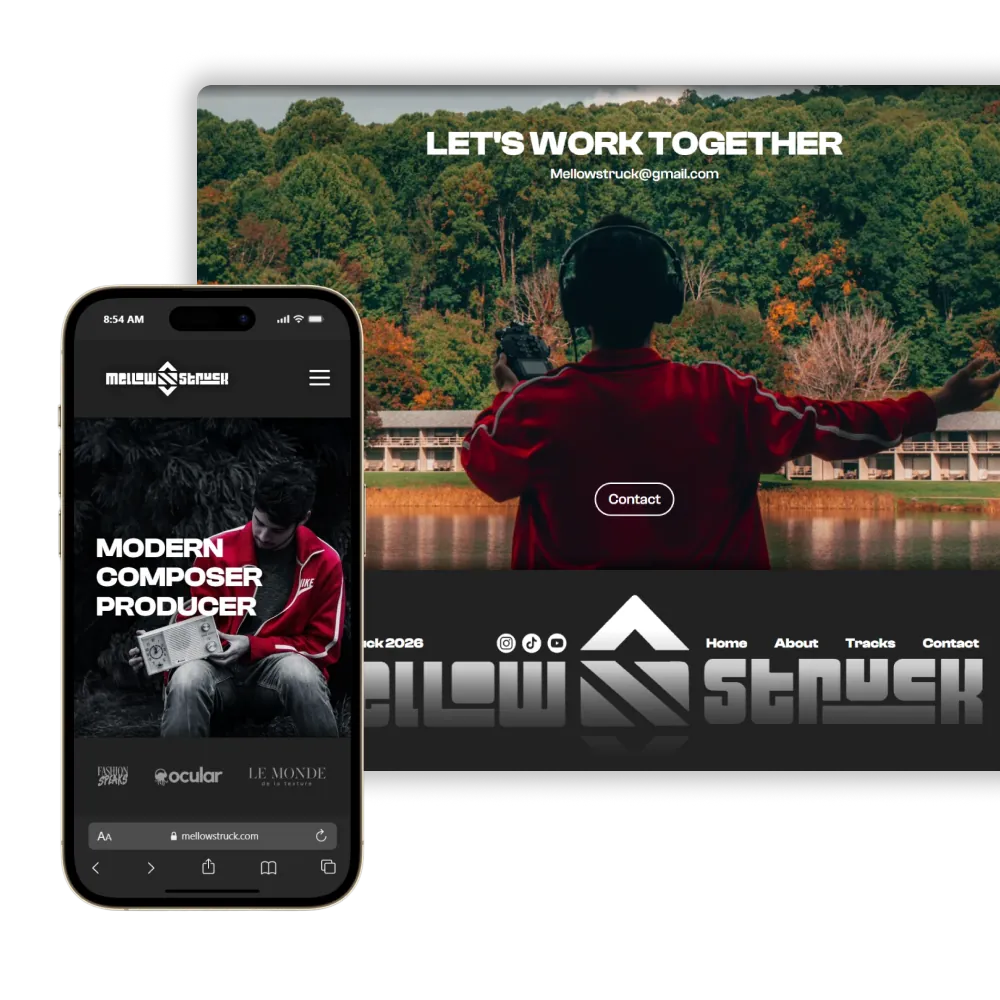
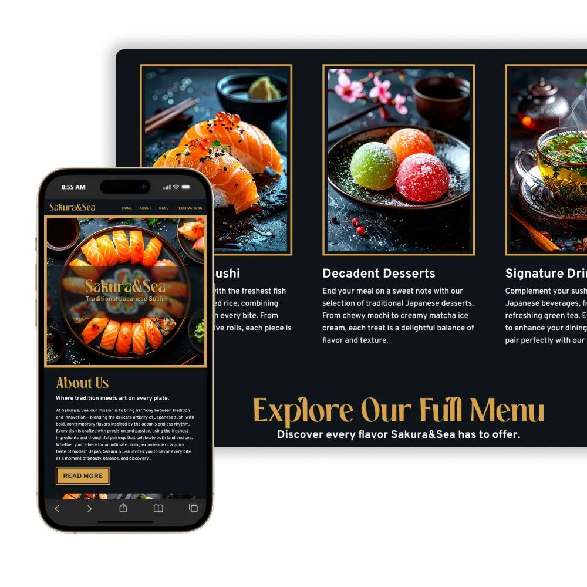

"Shout out to Robert and his team! We needed some work done for our company, and we needed it fast. Someone recommended Robert to us. They said not only he was very good at what he does but also very fast and efficient with his work. So we reached out to him. Not only the work was done fast but the it was amazing. The logos looked sharp and he even gave us options to choose from. Just what we needed. He will be our “to go to” guy when our company is in need of this type of work. Thank you Robert!"
SEE PROJECT
"Robert did an incredible job designing the logo for my brand. I had a specific vision in mind, and he managed to capture it perfectly while keeping the process simple and stress-free. He was really attentive to the feedback I gave and made sure the final design looked professional and unique. I'm stoked with how it turned out and would definitely suggest reaching out to him if you need high-quality design work done right."
SEE PROJECT
"I worked with Robert to build my website, and the experience was excellent from start to finish. He built the entire site from scratch rather than relying on a template or subscription platform, which gave us the flexibility to design exactly what I needed as a music producer. Robert was easy to communicate with throughout the process and really cared about getting the details right. I'm very happy with how the site turned out and would absolutely recommend him to anyone looking for a well-designed custom website."
SEE PROJECT
"Shout out to Robert and his team! We needed some work done for our company, and we needed it fast. Someone recommended Robert to us. They said not only he was very good at what he does but also very fast and efficient with his work. So we reached out to him. Not only the work was done fast but the it was amazing. The logos looked sharp and he even gave us options to choose from. Just what we needed. He will be our “to go to” guy when our company is in need of this type of work. Thank you Robert!"
SEE PROJECT
"Robert did an incredible job designing the logo for my brand. I had a specific vision in mind, and he managed to capture it perfectly while keeping the process simple and stress-free. He was really attentive to the feedback I gave and made sure the final design looked professional and unique. I'm stoked with how it turned out and would definitely suggest reaching out to him if you need high-quality design work done right."
SEE PROJECT
"I worked with Robert to build my website, and the experience was excellent from start to finish. He built the entire site from scratch rather than relying on a template or subscription platform, which gave us the flexibility to design exactly what I needed as a music producer. Robert was easy to communicate with throughout the process and really cared about getting the details right. I'm very happy with how the site turned out and would absolutely recommend him to anyone looking for a well-designed custom website."
SEE PROJECT
Hello! My name is Robert Book. I am a graphic designer, illustrator, and web designer who focuses on clear, well-structured design across digital and print media. My work includes website design, layout design, illustration, print design and branding, with an emphasis on intentional choices and clean execution. I enjoy turning ideas into visuals that are easy to understand and built to last.
I have worked with clients to design logos, websites, and marketing materials, managing projects from early concepts through final delivery. Through freelance and independent work, I've developed strong communication, organization, and time-management skills while working within deadlines.
Designed a clean black-and-white logo for MellowStruck by merging the letters M and S into a single bold mark. The style pulls from EDM and lofi aesthetics, mixing hard geometry with subtle rounded details so it feels sharp but not sterile.The logo was built to scale cleanly across digital and print uses, making it flexible enough for everything from album covers to social media.

Created a series of restaurant posters for Leaf&Ladle using bold typography, saturated accent colors, and high-quality food photography. The designs combine playful puns with structured and energetic fonts to grab attention and communicate menu items clearly. They're versatile for billboards, in-store displays, and digital promotions, effectively showcasing the brand's energy and appeal.

Designed a fully responsive portfolio website for MellowStruck, showcasing his music and portrait photography. The site uses a dark theme, layered visuals, and intuitive UI/UX to balance professionalism with vibrant imagery. It serves as a central hub for listeners, collaborators, and industry contacts, highlighting his work and social platforms.

Designed a modern, visually striking landing page for Sakura&Sea, a sushi restaurant, using bold contrast and high-quality product photography. The site combines traditional Japanese aesthetics with clean, minimal layout and responsive UI/UX. It guides users through hero, menu, and reservation sections while maintaining clarity and visual appeal across devices.


I enjoy working closely with clients to build designs that fit their goals and feel true to their ideas. Whether it's a new website, refreshed branding, or supporting graphics, I focus on creating work that is practical, consistent, and visually clear. I value collaboration and clear communication throughout the process to make sure the final result feels intentional and well thought out.
My services include graphic design, web design, illustration, branding, layout design, motion graphics, and print design. I can help with everything from concept development to final production, adapting my approach to fit the scope and needs of each project. If you're looking for a designer who pays attention to details and cares about how work is built and presented, I'd be glad to work with you.